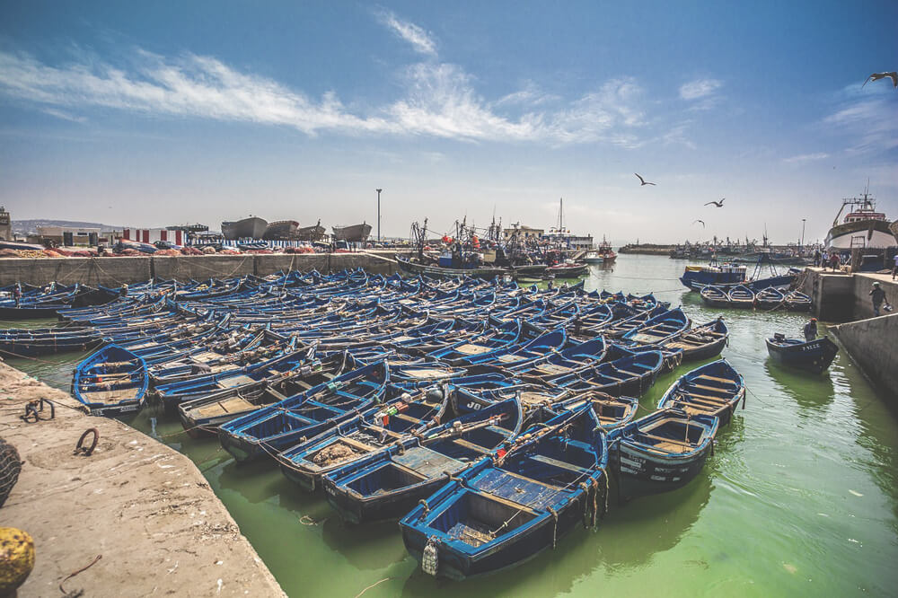
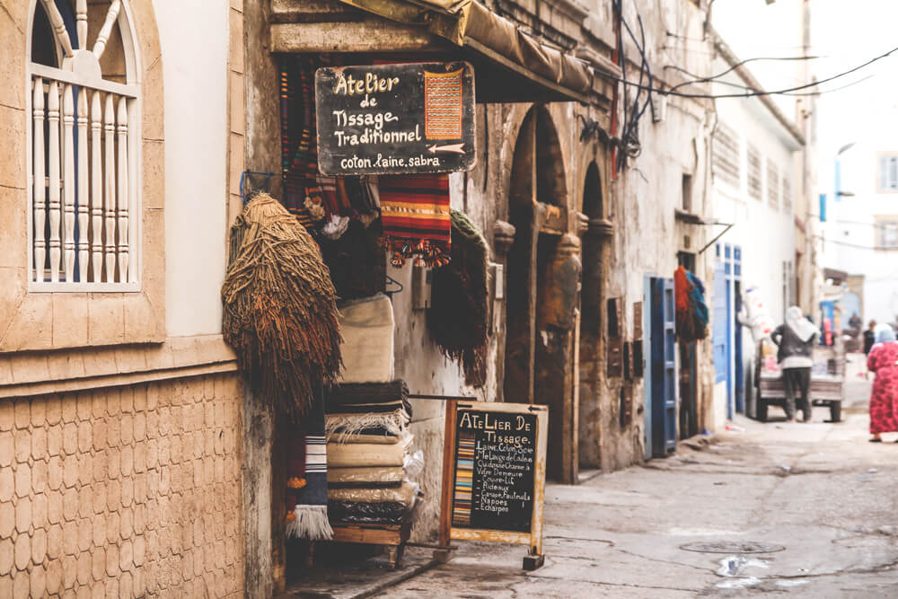
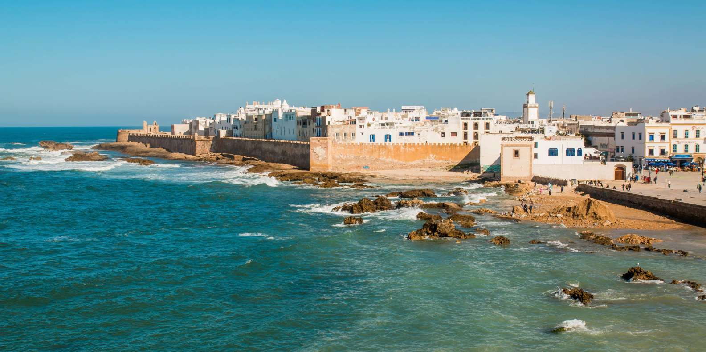
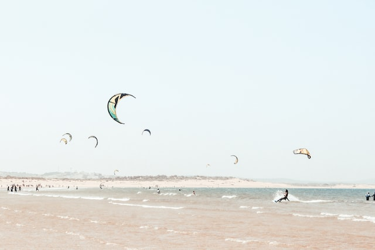

DIE BRAUT DES ATLANTISCHEN OZEANS
Essaouira ist eine Hafenstadt und ein Resort an Marokkos Atlantikküste.
Die Medina (Altstadt) ist von Befestigungsmauern aus dem 18. Jahrhundert
umgeben, die entlang der Küste verlaufen. Sie werden als Skala de la
Kasbah bezeichnet und wurden einst von europäischen Ingenieuren
entworfen. Die Mauern sind mit alten Messingkanonen gesäumt und bieten
Meerblick. Starke Passatwinde sorgen am halbmondförmigen Strand der
Stadt für ideale Bedingungen zum Surfen, Windsurfen und Kitesurfen.

Der Hafen von Essaouira ist noch ein klassischer Fischereihafen. Hier
werden noch nach alter Tradition die Fischerboote aus Holz gefertigt und
Netze geflickt. Der Hafen liegt direkt vor den Toren der Medina
(Altstadt) und ist fußläufig problemlos von der Innenstadt zu erreichen.

Im Gegensatz zu Marrakesch ist Essaouira ein überschaubares Städtchen.
Hier leben nur knapp 80.000 Einwohner in den neuen Bezirken drumherum
sowie innerhalb der Stadtmauern, der Medina. Der Weg führte uns direkt
an der Küste entlang und nach knapp 2 Stunden erreichten wir unser
nächstes Ziel.

Das Gnaoua World Music Festival ist ein Gnawa- Musikfestival, das
jährlich in Essaouira , Marokko , stattfindet . Das Festival bietet eine
Plattform für einen Treffpunkt der Musik und des Dialogs zwischen
ausländischen Künstlern und den mystischen Gnaoua (auch Gnawa )
Musikern.

Essaouira ist ein perfekter Allround-Spot mit hervorragenden Bedingungen
für Windsurfer, Kitesurfer und Wellenreiter gleichermaßen. Der Wind weht
sideshore von rechts und besonders in den Sommermonaten werden die
stetigen Passatwinde thermisch verstärkt und erreichen oft bis zu 6-7
Bft.